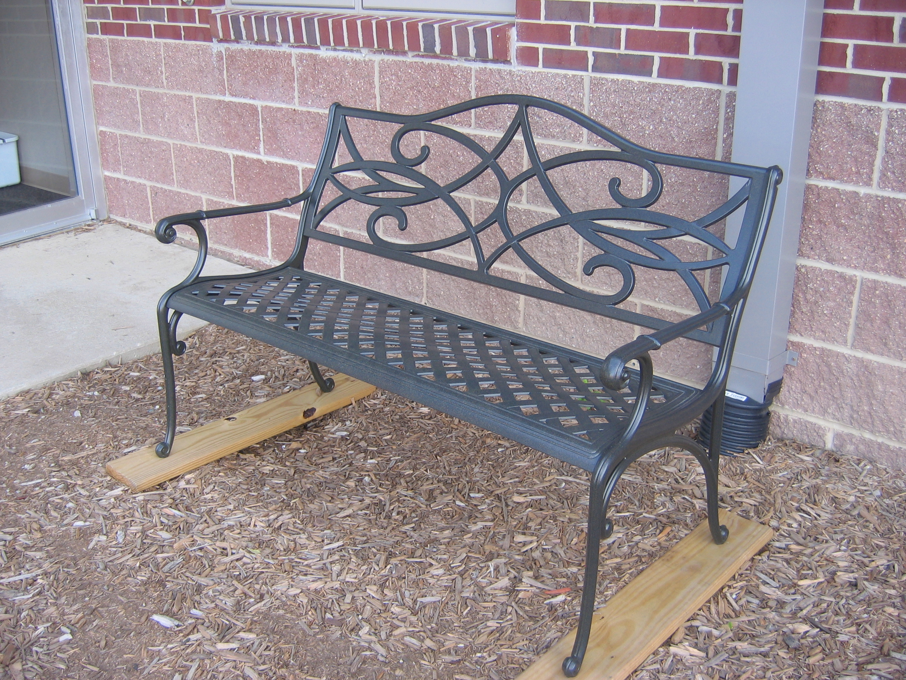
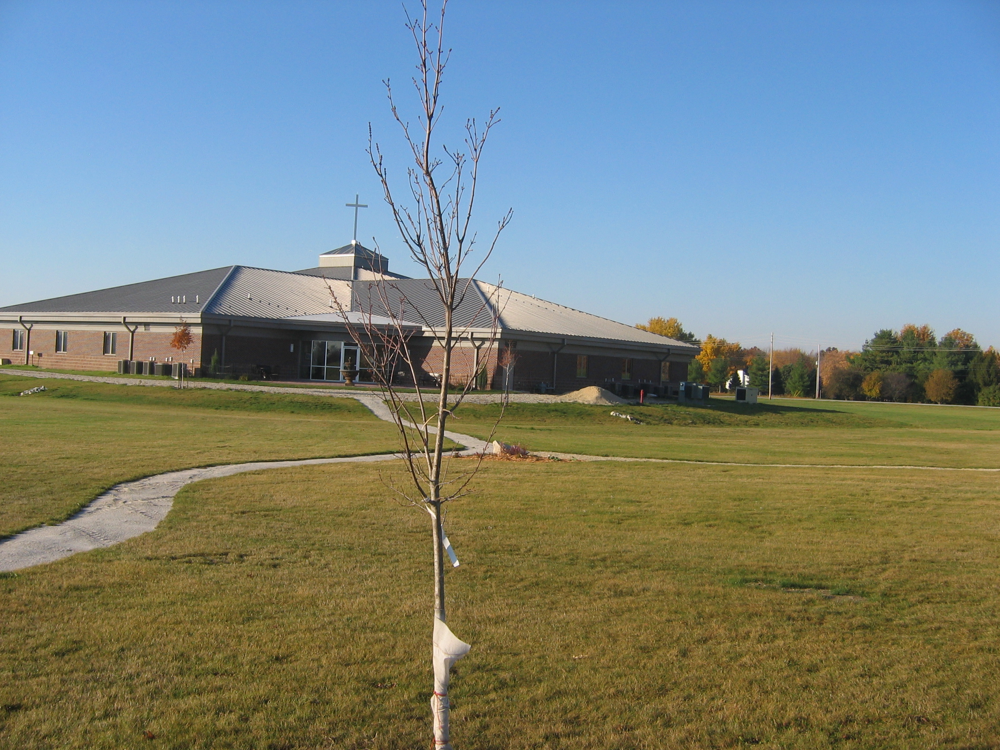

David Bowen
September 22, 1947 to January 14, 2008
Charlotte Bowen
August 22, 1950 – December 7, 2021
Relationship to St. Andrew United Methodist Church: David and Charlotte’s daughter-in-law, Kelli Robertson Bowen grew up in St. Andrew and her parents Tom and Pamela Robertson are current members. David’s Granddaughter Palmer Bowen also attends.
Use of Funds: A red maple tree was purchased in honor of David and a wrought iron bench has been installed in the small children’s playground. Funds donated in Charlotte’s memory will be used for another outdoor purchase.

Bench in small children’s playground purchased in memory of David.

Red Maple Tree planted in memory of David
Obituaries
David L Bowen
January 18th, 2008
David L Bowen age 60 of Lafayette died in his residence on January 14,2008. He lived in the area since 1970 and previously lived in the Delphi area. He was born on September 23,1947 in South Bend, Indiana to the late William F. and Helen (Bailey) Bowen. David graduated from Delphi High School and Purdue University. David devoted over 20 years of service to the Army, Army Reserve and the National Guard. When David retired he had achieved the rank of Major. He married Charlotte Hixson Bowen on June 10, 1972 in Johnson County Indiana and she survives. He was owner/operator of Bowen Ceramic Tile as a Ceramic Tile Contractor for over 35 years. David was an avid "nature lover," spending many hours outside with his four-legged companion, Beau. Surviving along with his wife is a daughter Angela Potter (husband William) of Palos Hills, IL. and a son Kyle Bowen (wife Kelli Robertson Bowen and son, Fletcher) of Lafayette; also surviving are 2 sisters, Patricia Hornick (husband Duane) of Elletsville, IN., and Michelle Weiss of California. Friends may call from 10-11 on Friday at Saint Andrew United Methodist Church with services there at llAM with Pastor Ron Johnson officiating. Memorials may be made to Wabash Valley Hospital. Share memories and condolences on line at Hippensteelfuneralhome.com
http://www.hippensteelfuneralhome.com/index.php?sec=Obits&con=Archive&iid=829 10/30/2008
Obituary
Charlotte R. Bowen
December 7, 2021
Indianapolis - Charlotte R. Bowen, aged 71, passed away on December 7, 2021 in Indianapolis, Indiana. Charlotte was born on August 22, 1950, to James and Mildred Hixson in Oak Ridge, Tennessee. After graduating from Franklin High School in 1968, she went on to study Education at Purdue University. She married David L Bowen, deceased, on June 10, 1972, in Johnson County, Indiana. She and David were married for 35 years until his death in 2008.
Charlotte was the co-owner and operator of Bowen Ceramic Tile for more than 35 years. She was a genius with color, and was widely sought to help design the exact right kitchen, bathroom, or fireplace. Charlotte poured her expertise into helping clients create their dream homes for more than 35 years. Each now a small memorial sprinkled throughout her Lafayette community.
Genealogy also held a special place in Charlotte's heart. She spent years traveling and sifting through dusty small town archives to uncover generations of family history. For Charlotte, the thrill of the hunt was a story worthy to be told.
Charlotte was a Girl Scout leader, a soother of babies, and chief architect for more than a few of her kids' school projects. Her passion was in helping people see the details and she would wish for us all to take an extra minute to wrap a pretty package, lend a sympathetic ear to someone going through a home remodeling project, and to cheer for Purdue basketball.
Surviving her are children Angela Potter, of Greenwood, IN, and Kyle Bowen (wife Kelli Robertson Bowen) of Tempe, AZ and grandchildren Fletcher, Palmer, Hamilton, and Sinclair. Also surviving are sisters Virginia Ann "Ginger" Kahl (Vern) of Franklin, IN, Karen Mengle (Rev) of Greenwood, IN, and a brother David James Hixson.
No funeral or memorial service are immediately planned. The family asks that in lieu of flowers, donations be made to Badger Grove Community Baptist Church of Brookston, IN.
Posted online on December 16, 2021
Published in Journal & Courier